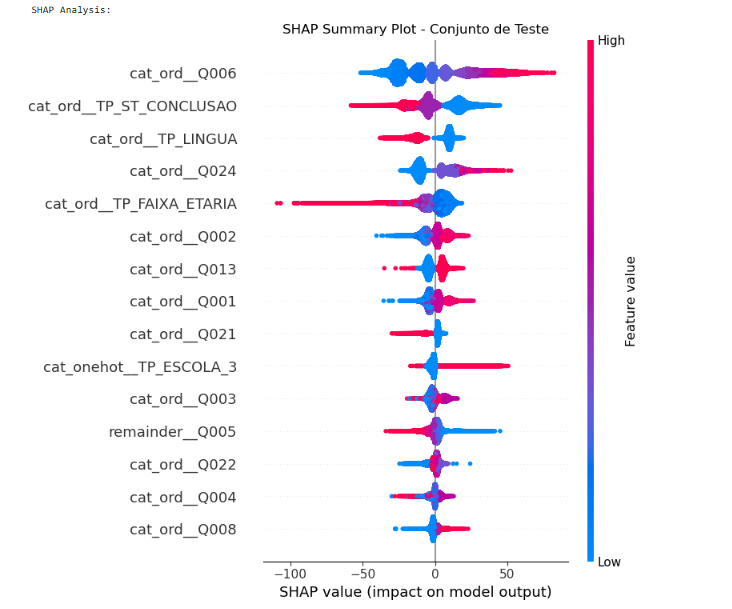
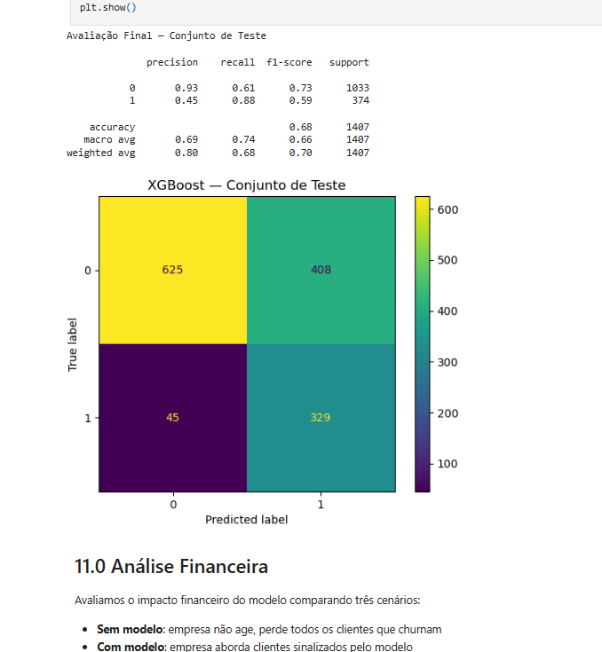
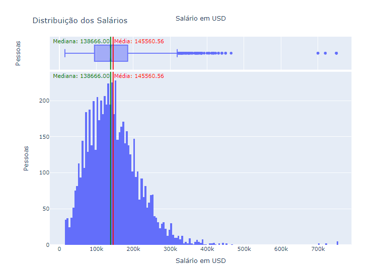
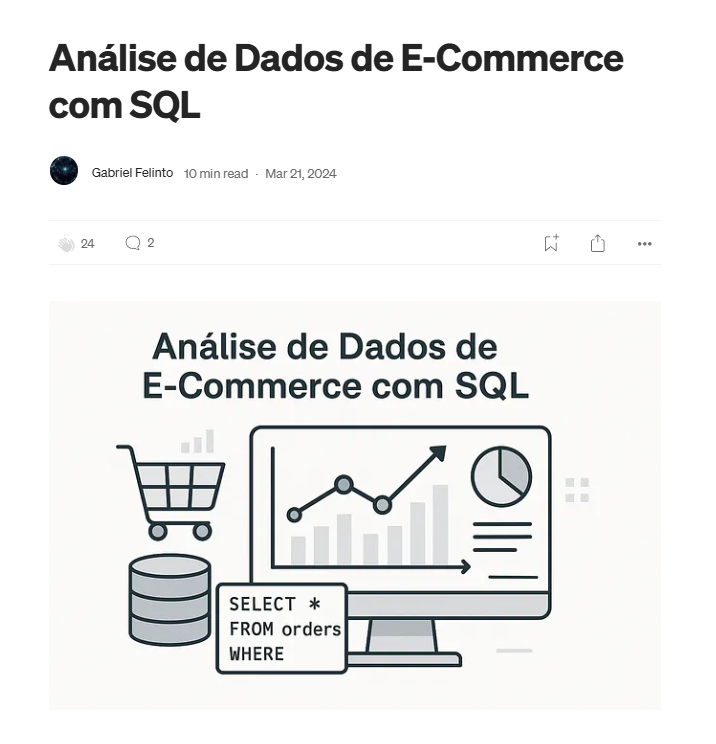
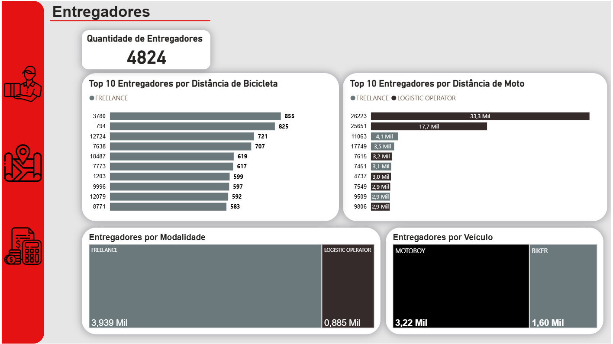
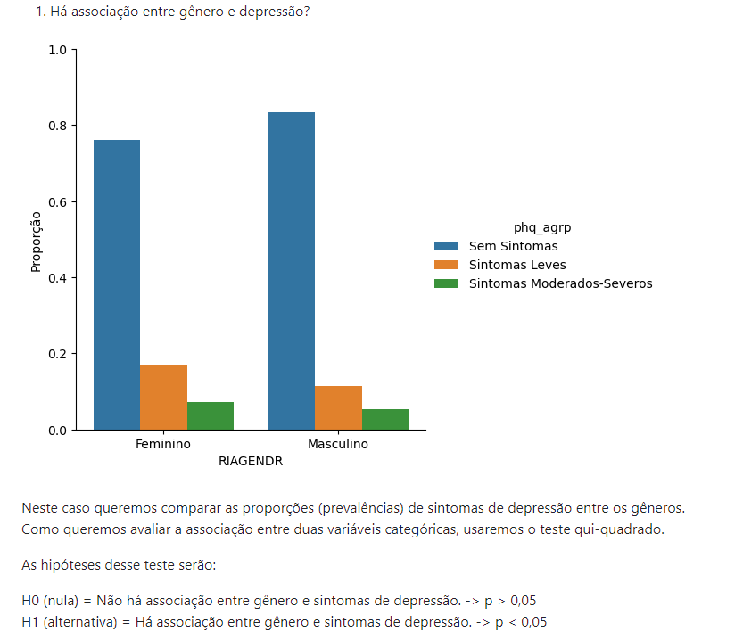
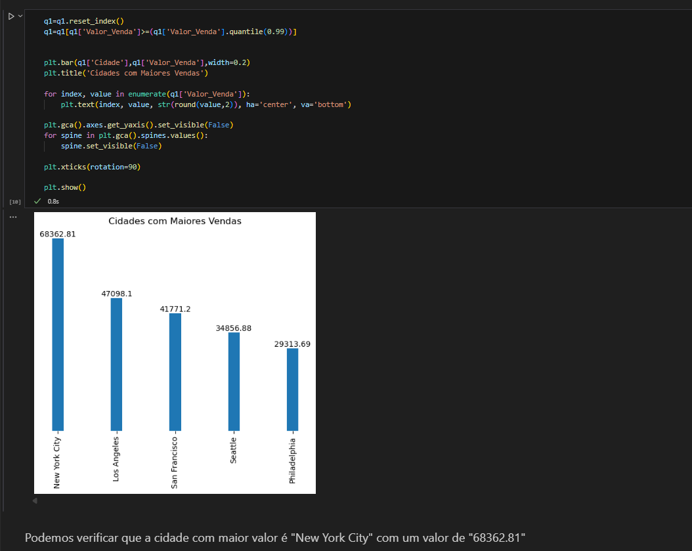

Portfólio · Data Science
Cientista de Dados com graduação em Engenharia e Mestrado em andamento na UFPE. Experiência com modelos preditivos, pipelines ETL e grandes volumes de dados — Python, SQL, Power BI e ML aplicados a problemas reais.

Análise Preditiva ENEM 2023
Modelo preditivo treinado nos microdados do INEP (2,6M registros) para estimar notas a partir de variáveis socioeconômicas. LightGBM otimizado com Optuna atingiu RMSE 75.71 — 20.6% melhor que o baseline. Interpretabilidade via SHAP e deploy em produção com Streamlit.

Classificação de Churn · Telecom
Modelo XGBoost para prever cancelamento de clientes (7K registros, 20 features). Otimizado por F2-score via Optuna priorizando Recall — detectou 86% dos churns reais, transformando uma perda projetada de R$500K em resultado positivo de R$354K.

EDA · Salários em Data Science (2020–2024)
Análise exploratória de salários na área de DS identificando padrões de remuneração por região, senioridade e tipo de contrato — útil tanto para profissionais quanto para empregadores no planejamento de pacotes competitivos.

Análise de E-Commerce · Olist
Modelagem e análise do Brazilian E-Commerce Public Dataset em MySQL. Queries para ranking dos 20 maiores vendedores de 2017, categorias mais vendidas, taxa de entrega no prazo e vendedores com maior índice de cancelamento.

Dashboard · Startup de Entregas
Análise exploratória e dashboards interativos para uma startup de logística com 4.824 entregadores. Indicadores de receita por estado e tipo de entrega, ranking dos top 20 por distância percorrida e cálculo de bônus via DAX.

Inferência Estatística · Transtorno Depressivo
Testes de hipótese aplicados aos dados da NHANES para investigar como gênero, idade e renda familiar se relacionam com transtorno depressivo. Qui-quadrado para variáveis categóricas e ANOVA para variáveis contínuas.

EDA · Varejo nos EUA
Resposta a dez perguntas de negócio sobre uma rede de varejo americana: cidades e estados com maior volume de vendas, segmentos mais lucrativos, categorias de produto e tendências temporais de pedidos.